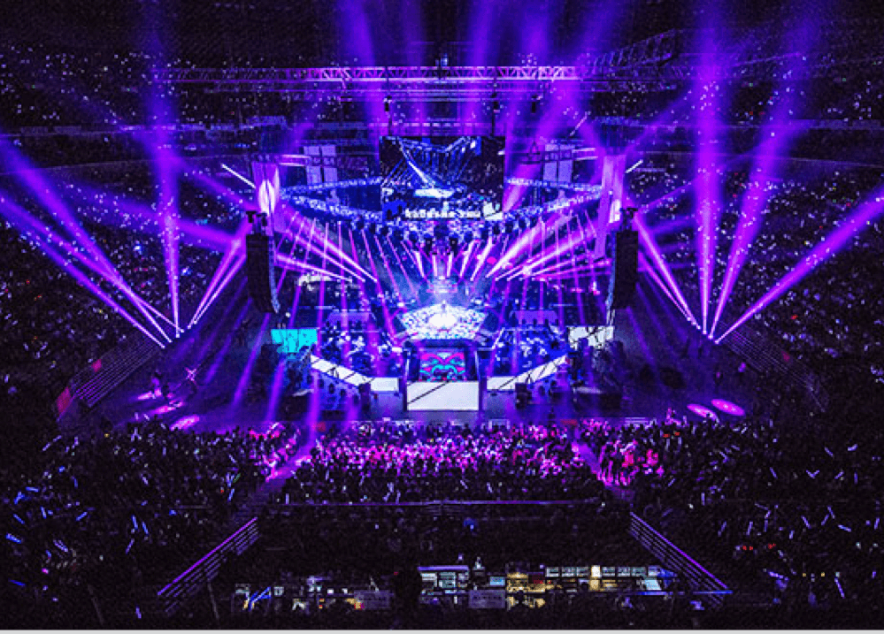
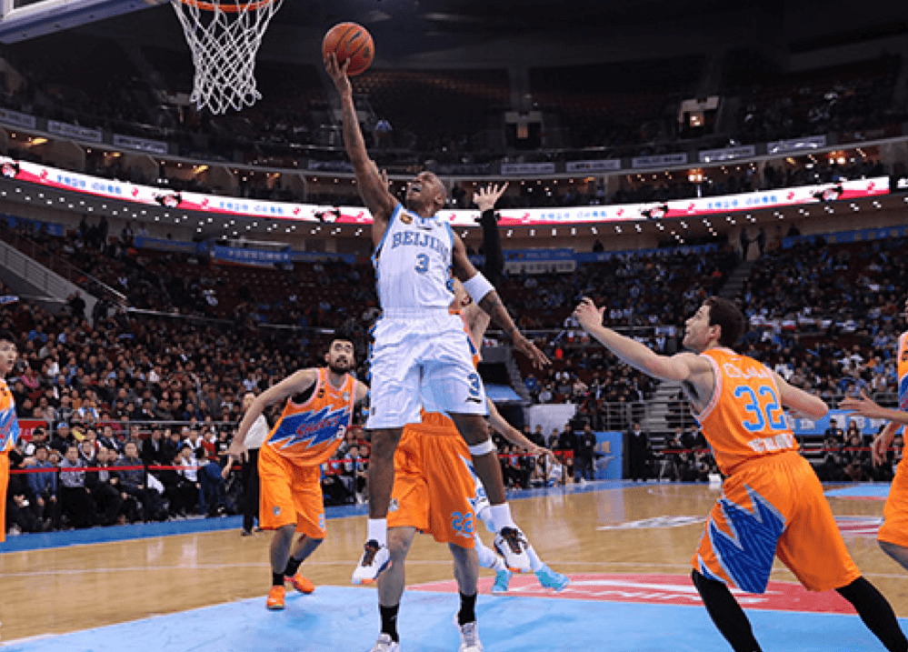
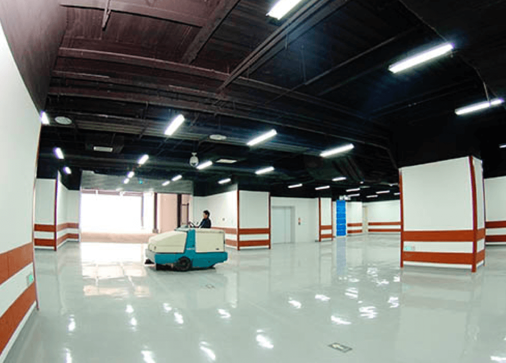

原五棵松文化体育中心占地52公顷，由华熙国际投资集团有限公司投资兴建，是北京奥运会篮球、棒球项目的比赛和训练场馆。其中，篮球项目的比赛和训练用馆分别为五棵松体育馆和五棵松体育馆训练馆；棒球项目原有三块场地，两个比赛场、一个训练场，均为临建，奥运会后被拆除。
奥运会后，能容纳18000人的五棵松体育馆斥资数亿，按照世界顶级演唱会场馆标准进行了改造，成为既适合举办大型体育比赛、又适合举办演唱会等娱乐活动的综合性场馆。改造后初期，即凭借国际顶尖的硬件设施和高标准的服务，成功举办了碧昂斯非我莫属北京演唱会、Super junior亚洲巡演北京演唱会、后街男孩世界巡演北京演唱会、天后王菲演唱会、加拿大小天王贾斯丁·比伯演唱会以及NBA中国赛、CBA全明星赛等一系列高端演唱会和体育赛事。2011年初获万事达卡赞助，是国内首家获冠名赞助的奥运场馆。目前五棵松体育馆的冠名赞助商为凯迪拉克。
2011-12赛季，北京首钢男子篮球队CBA总决赛在五棵松体育馆举行，当年北京队即击败七冠王广东队，获得球队历史上首个总冠军。之后，北京队在这里再拿两个冠军，四年三冠，五棵松体育馆见证了北京王朝的诞生，也因此被球迷誉为北京队的福地。2015年，北京首钢男篮决定将常规赛主场也移师五棵松体育馆，顶级球队与顶级球馆携手开创CBA历史新纪元。如今，五棵松体育馆已成为国内及至国际为数不多的高标准专业篮球馆和北京最精彩娱乐活动的全新驻地，场地利用率高达70%，位列世界先进水平。因设施先进，五棵松体育馆还被选为2019年男篮世界杯决赛用馆和2022年冬奥会冰球项目比赛场馆。
五棵松体育馆训练馆（现为M空间）经过改造后，也以独特的2400平米开阔、无立柱、多功能设计以及先进的全套设施配备，成为承接不同台型及规模活动的最佳场所，从小型商业演出、歌迷见面会、企业庆典、新产品发布会、会议宴会，到体育活动、时尚秀等，均可实现。湖南卫视、江苏卫视还曾将这里作为演播厅，录制《中国最强音》、《全能星战》等精彩娱乐节目。